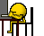
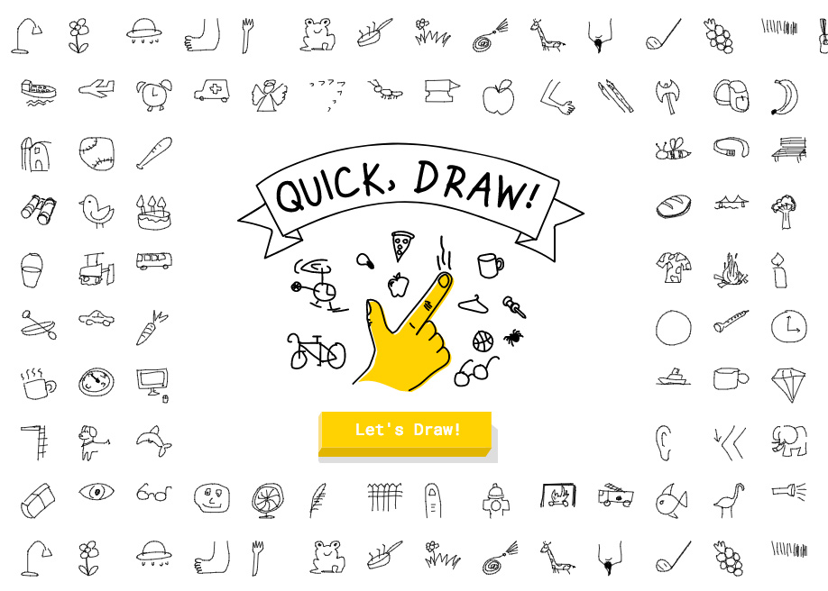
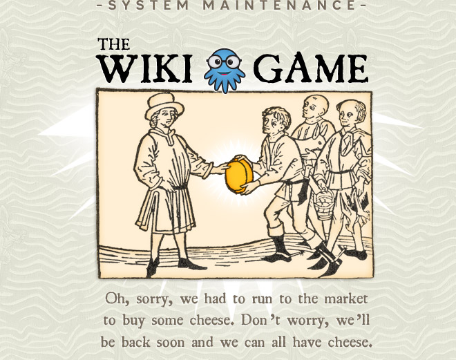
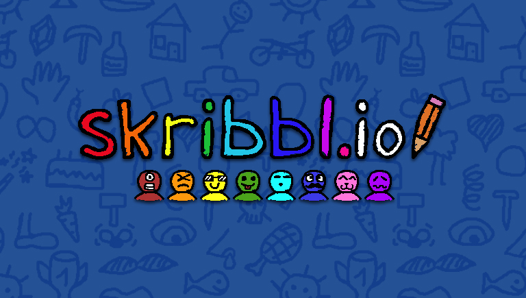
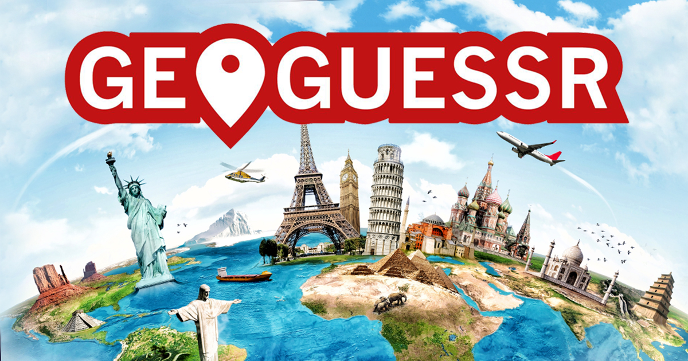
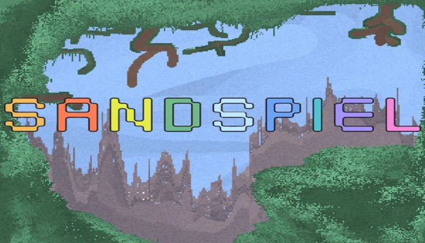
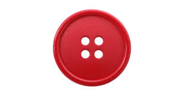
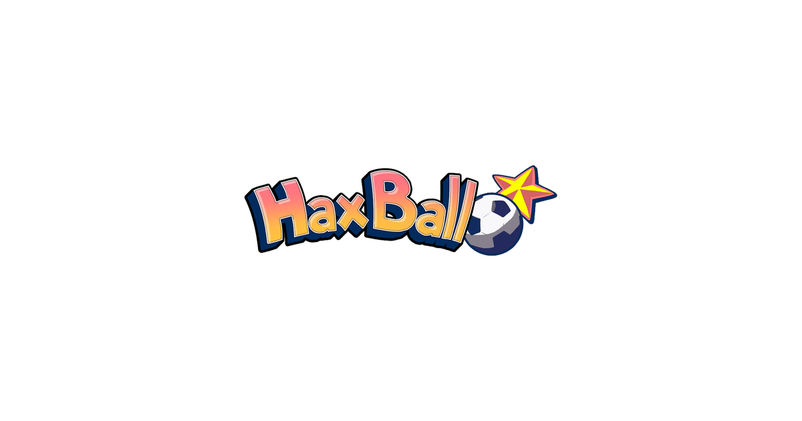
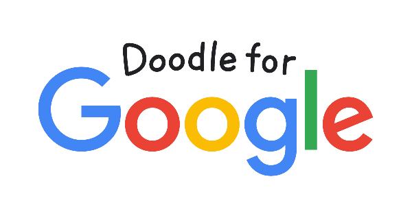

Si estás cansado de usar las mismas aplicaciones o páginas web y ya no sabes qué hacer con tu computadora o teléfono, tenemos una solución para vos. Te dejamos una lista de páginas fáciles de acceder que varían entre divertidas, inútiles, raras o incluso útiles, y que sin duda te mantendrán entretenido frente a la pantalla. ¡Cada enlace es una puerta a un mundo diferente que podrás explorar! 
¿Puede una red neuronal reconocer tus dibujos? ¡Averigüémoslo!
Quickdraw es una página donde intentás dibujar el tema u objeto asignado para que una inteligencia artificial lo adivine. Aunque parece simple, es muy entretenido.
¿Sos capaz de pasar de un tema a otro completamente distinto solo haciendo clic en enlaces? ¿Podrás llegar al podio?
En esta página, tu objetivo es empezar en un artículo de Wikipedia sobre un tema específico y llegar a otro completamente diferente solo navegando entre los enlaces. ¡Un verdadero desafío para mentes curiosas!
¿Dudás de tu habilidad para dibujar? Este juego es ideal para descubrirlo.
Podés jugar online uniéndote a una sala pública o creando una privada con amigos. Uno dibuja una palabra asignada y los demás intentan adivinar. ¡Muy divertido y risas aseguradas!
¿Sos un experto en geografía? ¡Poné a prueba tus conocimientos!
Se te muestra una imagen de algún lugar del mundo y tenés que adivinar de dónde es. Muy recomendado para los amantes de los mapas y los viajes.
¿No sabés qué buscar? Esta página lo hace por vos.
Un botón rosa que, al hacer clic, te redirige a una página web aleatoria. Desde puzzles hasta sitios sin sentido. ¡Pura sorpresa!
¿Buscás algo adictivo y simple? Esto es para vos.
Sandspiel te permite experimentar con diferentes materiales y ver sus reacciones al mezclarlos. Un pequeño laboratorio de arena virtual.
¿Te gusta presionar botones? Este es el indicado.
Una sola acción: presionar el botón y dejarte llevar por una actividad o juego aleatorio. ¡Ideal para matar el tiempo!
¿Te gusta el fútbol simple y rápido? Probá esto.
Haxball es un juego online de fútbol con mecánicas sencillas y sin muchas reglas. Perfecto para divertirse en grupo.
Una colección de juegos curiosos y creativos.
Desde Infinite Craft hasta simulaciones interactivas. Neal.fun ofrece muchos juegos con temáticas diferentes, para todo tipo de gustos.
Juegos creados por el clásico navegador. ¡Confiables y divertidos!
Los Doodles de Google son mini juegos con diseños bonitos y jugabilidad simple. Perfectos para pasar el rato.
